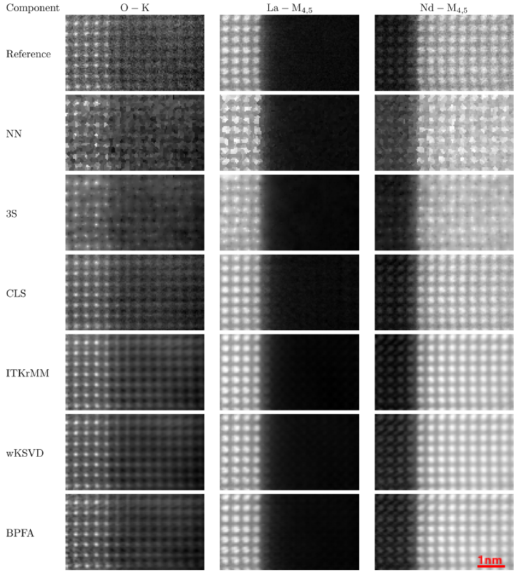
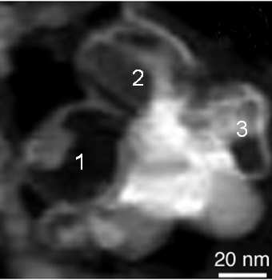
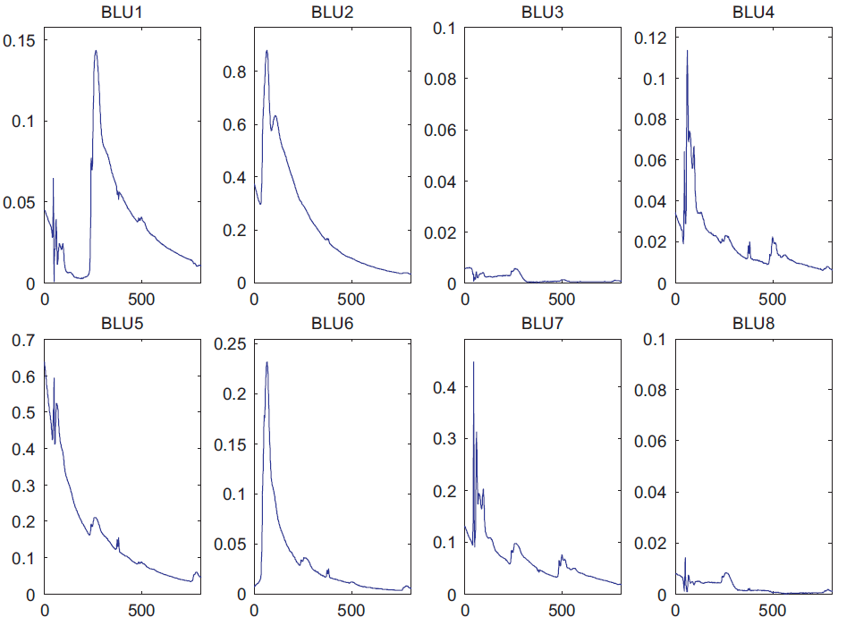
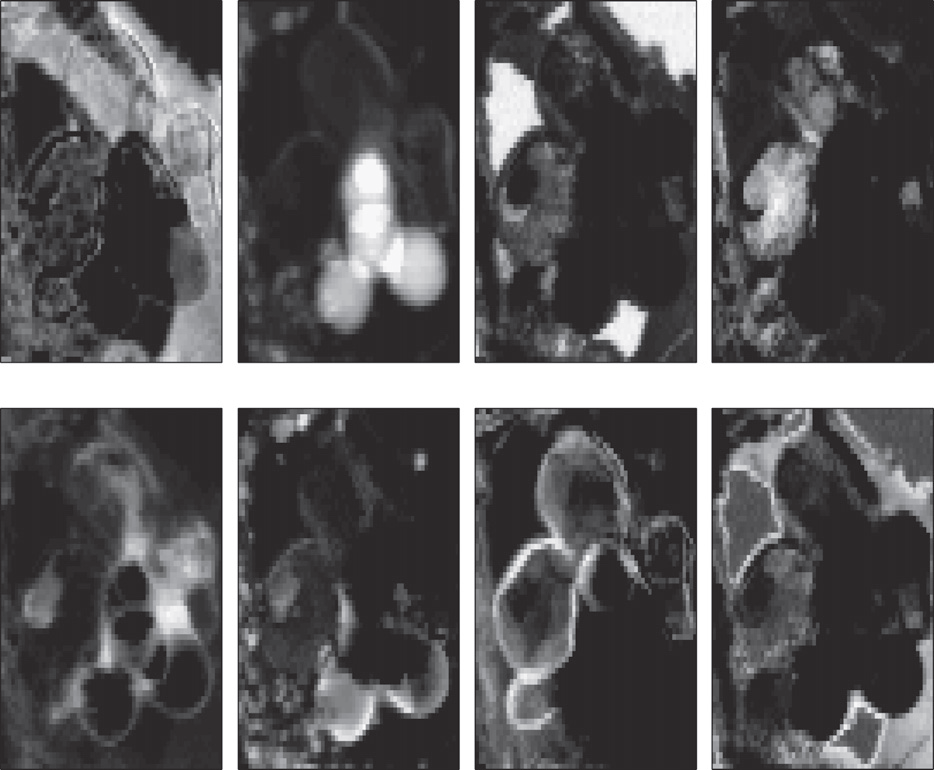

STEM-EELS spectromicroscopy
Fast reconstruction of EELS images from sparse sampling
Electron microscopy has shown to be a very powerful tool to map the chemical nature of samples at various scales down to atomic resolution. However, many samples can not be analyzed with an acceptable signal-to-noise ratio because of the radiation damage induced by the electron beam. This is particularly crucial for electron energy loss spectroscopy (EELS), which acquires spectral-spatial data and requires high beam intensity. Since scanning transmission electron microscopes (STEM) are able to acquire data cubes by scanning the electron probe over the sample and recording a spectrum for each spatial position, it is possible to design the scan pattern and to sample only specific pixels. As a consequence, partial acquisition schemes are now conceivable, provided a reconstruction of the full data cube is conducted as a postprocessing step.
We propose fast and accurate reconstruction algorithms for STEM-EELS imaging. Similarly to the interpolation methods, they should be fast enough to visualize the reconstructed image along the acquisition. Meanwhile, they should also achieve better reconstruction performances than those reached by interpolation, close to those of dictionary learning-based methods. To that end, regularized least square methods are proposed in the context of spatially smooth samples or of periodic crystalline samples.
Reconstruction of patially smooth images
First, we propose two reconstruction algorithms, referred to as S2N and 3S, for multiband images acquired by STEM-EELS which exploits the spectral structure and the spatial smoothness of the image. The performance of the proposed schemes is illustrated thanks to experiments conducted on a realistic phantom dataset as well as real EELS spectrum-images.
The algorithms and the main results are detailed in the paper published in IEEE Trans. Computational Imaging in 2018.
- article
 .
.
A python library is available online here
Reconstruction of periodic crystalline structures
Then we propose a fast and accurate reconstruction method, CLS, suited for atomic-scale EELS with periodic structures. As for S2N and 3S, CLS relies on a least-square formulation of the reconstruction problem. To exploit the spatial periodicity of the images to be reconstructed, we design a group-sparsity regularization which promotes a jointly sparse representation accross the bands in a DCT basis. Some reconstruction results are depicted in Fig. 1.

Fig. 1. The images show the sum of 5 bands around 3 particular edges (O-K, La-M4,5 and Nd-M4,5). The reference corresponds to the
real, possibly noisy, image R2.
These results confirm the performance gap between NN whose images are not smooth enough and DL-based methods which are close to the reference with an
additional denoising effect. CLS performs clearly better than NN and 3S and its results are close to DL-based methods.
The algorithm and the main results are detailed in the paper published in Ultramiscropscopy in 2020.
- article .
Results can be reproduced using the Github repository
Spectral mixture analysis of EELS spectrum-images
When processing spectrum-images, microscopists usually try to map elemental, physical and chemical state information of a given material. This paper reports how a spectral unmixing (SU) algorithm dedicated to remote sensing hyperspectral images can be successfully applied to analyze spectrum-image resulting from electron energy-loss spectroscopy (EELS). SU generally overcomes standard limitations inherent to other multivariate statistical analysis methods, such as principal component analysis (PCA) or independent component analysis (ICA), that have been previously used to analyze EELS maps. Indeed, ICA and PCA may perform poorly for linear spectral mixture analysis due to the strong dependence between the abundances of the different materials. One example is presented here to demonstrate the potential of this technique for EELS analysis.
The Bayesian linear unmixing (BLU) algorithm and the main results are detailed in the paper published in Ultramicroscopy in 2012.
- article .
The Matlab codes of the BLU algorithm used in this study is available below.
- matlab codes
 [ .tar - 110Ko ].
[ .tar - 110Ko ].
New! A beta version of a Matlab friendly-interface (GUI) for the BLU algorithm:
- Matlab GUI BLU code [ .zip - 2.2Mo ]
Results on a real EELS spectrum-image
The analyzed dataset consists of a 64x64 pixel spectrum-image acquired in 1340 energy channels over a region composed of several nanocages in a boron-nitride nanotubes (BNNT) sample. Note that nanocages are supported by a holey carbon film for TEM analysis. These data have been extensively analyzed in a previous paper and a high angle dark field image of the region of interest
is depicted in Fig. 2.

Fig. 2. HADF image corresponding to a 64x64 spectrum-image recorded in an area rich in nanoparticles containing boron (pure boron, boron oxide or h-BN).
The proposed algorithm has been applied on this real data set. The extracted spectral signatures are depicted in Fig. 3 and the corresponding abundance maps of the materials are depicted in Fig. 4.

Fig. 3. Spectral components estimated by BLU. The recovered endmembers properly correspond to EELS spectra.

Fig. 4. Maps of the spectral components.